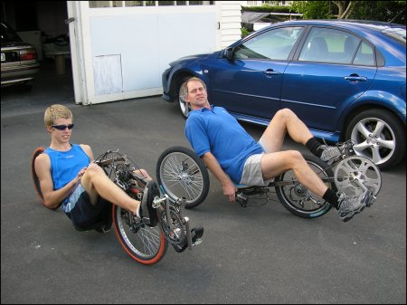
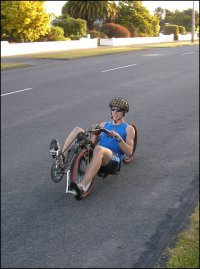
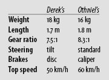

Recumbent glory
When was the last time you were cycling and got pulled over for speeding? Was it in a 100 km/h zone?
Welcome to the world of recumbent human-powered vehicles. Yep, that’s the official mouthful. Thankfully, Derek and Othniel Cressy are more casual about it; they usually just call them “lie-down bikes”.

It all started earlier this year when the two of them woke up one morning and decided they were seriously interested in speed. High speed. Neither of them (in theory, at least) are the boy-racer type. This was going to be different. Why not human powered? And – in line with our “home” theme – why not make the bikes themselves, in their garage?
The inspiration came first from a book on Kiwi ingenuity, and then by reading about the “Wind Cheetah”, a recumbent trike made by the University of Canterbury’s mechanical engineers. The basic idea is to get as low as possible to minimise air resistance. Air friction is the cyclist’s main barrier to high speed. If your frontal area is half the size, you should be able to go almost twice as fast.
That’s just about right, too. Othniel’s machine is a low, slender two-wheeler with a very small frontal area. Where you’d cycle at 25 km/h, he’d be doing 40. Most people would max out at 40 km/h, but by then he’d be going 60 (and that’s on the flat).
Derek’s “bike” is actually a three-wheeler, so it’s slightly slower, but also more stable and easier to ride. What’s more, Derek plans to cover it with a carbon-fibre fairing – a thin, streamlined shell to reduce drag even further (as well as making a good umbrella). While Derek’s recumbent is awaiting completion, Othniel already uses his almost daily.
Apart from speed, what’s their motivation? They joke about making millions: especially with the way petrol prices are going, couldn’t they start selling these things? But mainly what drives them is plain curiosity to see how far they can push their creative engineering.
They think it’ll be a while before one of them breaks Sam Whittingham’s incredible 130 km/h record. In the meantime, if you’re driving around Masterton and see a speeding flash, it’s probably just Othniel in all his recumbent glory.